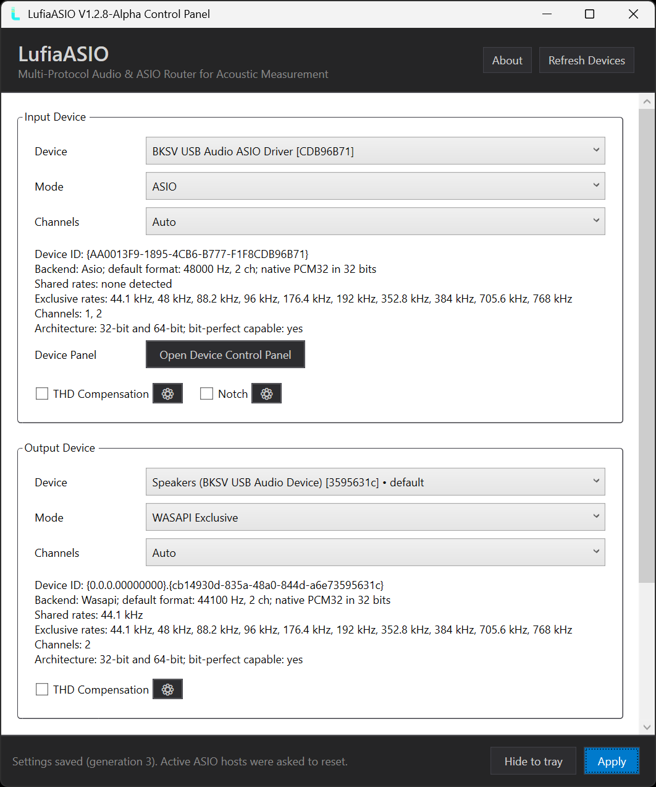
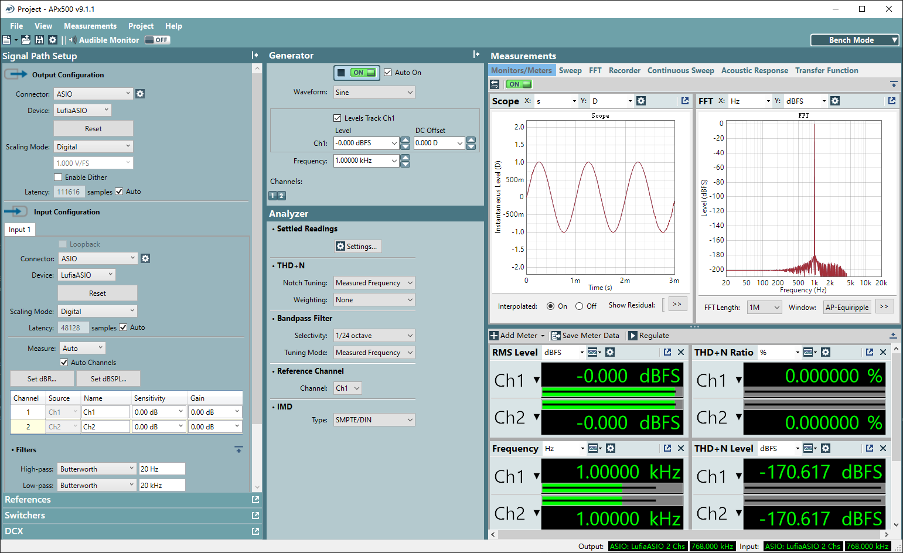
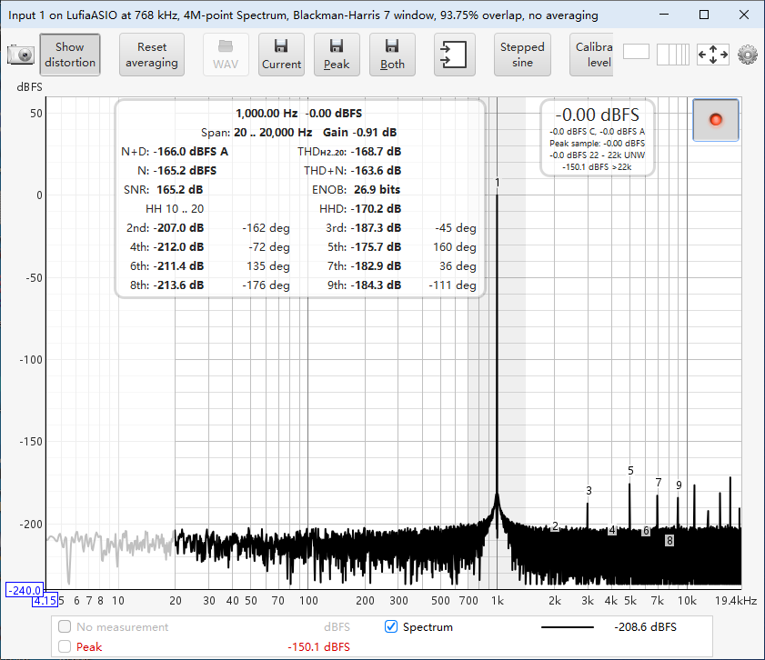
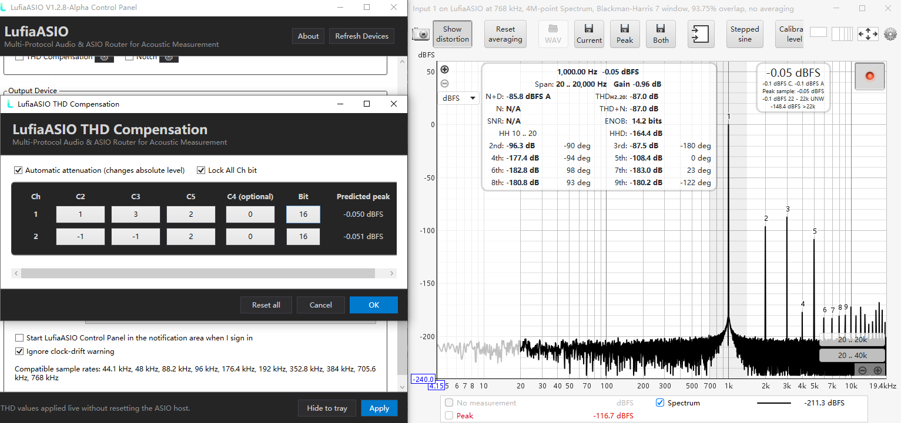
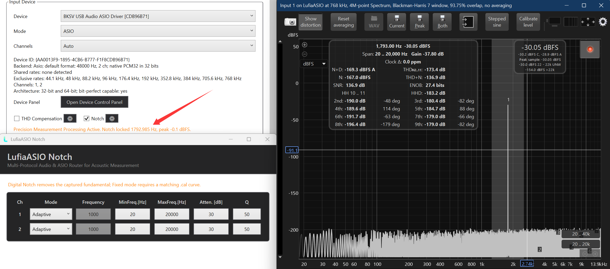

One ASIO driver. Five Windows Audio backends.
Any input-to-output combination.
A multi-protocol Audio router for measurement benches that need the freedom to pair the right ADC, DAC, driver, and host—without abandoning the ASIO workflow.
Preview release. Verify every critical measurement against a known reference before production use.
Windows 10 / 11 · 32-bit and 64-bit ASIO hosts

- Native ASIO
- WASAPI
- DirectSound
- WDM-KS
- MME
* Only when a compatible WASAPI Exclusive PCM32 endpoint accepts the format. Unsupported rates are never simulated.
Build the signal chain your bench actually needs.
Choose the input and output backend independently. LufiaASIO reports an unsupported route instead of silently falling back to another API.
5 × 5
Every backend can meet every backend.
Bring a Windows endpoint into an ASIO-only host, aggregate two native ASIO drivers, or mix a legacy capture path with a modern playback device.
- Independent mode, device, and channel selection
- WASAPI Auto, Exclusive, and Shared choices
- Exact sample-rate validation on every enabled side
OUTPUT BACKEND
INPUT BACKEND
| Input / Output | WASAPI | MME | DirectSound | WDM-KS | Native ASIO |
|---|---|---|---|---|---|
| WASAPI | Supported | Supported | Supported | Supported | Supported |
| MME | Supported | Supported | Supported | Supported | Supported |
| DirectSound | Supported | Supported | Supported | Supported | Supported |
| WDM-KS | Supported | Supported | Supported | Supported | Supported |
| Native ASIO | Supported | Supported | Supported | Supported | Supported |
Native-ASIO aggregation
Present one ASIO device to the host while capturing from one native driver and playing through another.
Beyond the GUI rate list
Probe the native WASAPI Exclusive endpoint directly and expose every format the hardware actually accepts.
Bit-perfect, when the path is eligible
Compatible integer WASAPI Exclusive, native ASIO, and eligible WDM-KS paths can remain bit-perfect with all processing disabled.
Stable device recall
Profiles follow each backend's native device ID—not duplicate, corrupted, or reordered display names.
A disciplined real-time path
No heap allocation, registry access, file I/O, or interface work runs inside the real-time callback.
Diagnostics you can act on
Inspect underflow, overflow, discontinuity, callback, frame, and FIFO watermark counters from the control panel.
Compatibility paths stay honest. MME, DirectSound, WASAPI Shared, and routes that require Windows format conversion are not advertised as bit-perfect.
Keep the software you know. Connect the hardware you need.
LufiaASIO bridges Windows endpoints and independent interfaces into ASIO-capable test tools without hiding the real transport.

APx500AP Audio Precision APx
Bring Windows endpoints into an ASIO-only bench.
Use LufiaASIO as the APx connector, then route either direction to WASAPI Exclusive, WDM-KS, or a native ASIO device.

REWR Room EQ Wizard
Mix interfaces without giving up ASIO.
Decouple the host buffer from each backend's native packet size for large FFTs, sustained recording, and responsive wideband work.
LISTEN SOUNDCHECK
Routing flexibility for sustained test sequences.
The composite engine is designed for continuous callbacks, mismatched packet sizes, and deliberately large host buffers.
24/7continuous workloads
1Mmaximum buffer frames
Shown results are examples from the pictured digital-loopback test setup. They are not guaranteed specifications for other hardware.
Put calibrated processing inside the route.
Per-channel tools appear only on native ASIO and WASAPI Exclusive routes, with profiles bound to backend, direction, mode, device ID, and channel.

INPUT / OUTPUT TOOLC2–C5
Per-channel THD Compensation
Apply signed polynomial correction with selectable coefficient resolution, live preview, peak prediction, and optional automatic attenuation.
- Independent coefficients for every enabled channel
- 16- to 32-bit coefficient resolution
- Experimental harmonic voicing without a conventional EQ curve
Calibration required. Coefficients are specific to device, channel, level, load, and setup.

INPUT TOOLAdaptive / Fixed
Digital fundamental Notch
Suppress the captured fundamental so low-level harmonics and residual noise are easier to inspect.
- Adaptive search range with automatic lock tracking
- Fixed frequency, attenuation, and Q
- Live lock status and per-channel profiles
Include it in the method. The Notch changes captured data; fixed mode may need a matching calibration curve.
Processing intentionally changes samples.
Disable THD Compensation and Notch for bit-perfect transport tests. Establish a clean baseline before enabling either tool.
From installer to a verified route.
Start unprocessed, prove the signal path, then add only the measurement tools your method requires.
-
01
Install the right package
Use x64 on 64-bit Windows—it registers both x64 and x86 ASIO components. Use x86 only on 32-bit Windows.
-
02
Select LufiaASIO
Choose LufiaASIO as the ASIO driver in your host, then open its control panel.
-
03
Build the route
Set mode, device, and channels independently for input and output. Apply, then allow the host to reset.
-
04
Verify before processing
Confirm rate, channel order, level, and an unprocessed baseline. Start near 2,048 or 16,384 frames for measurement work.
IMPORTANT CLOCKING NOTE
Matching sample-rate labels do not mean matching clocks.
LufiaASIO avoids adaptive sample-rate conversion to preserve eligible bit-perfect paths. Two independent devices can drift until the FIFO underflows or overflows.
For long synchronized measurements: share word clock, a common digital clock, or another confirmed hardware reference.
No adaptive SRC
Best-effort FIFO
Hardware sync advised
1.2.8 Alpha
Ready to build a more flexible Windows Audio chain?
Download only from the official release page and verify the accompanying SHA-256 file before installation.
The details that keep a measurement honest.
LufiaASIO expands routing choices; it does not override hardware, driver, format, or clock limitations.
Full troubleshooting guideWhy is a sample rate missing?
Every enabled side must support the exact rate. WASAPI Shared accepts only the current Windows Mix Format; unsupported native formats remain unavailable.
Why will two native ASIO devices not open together?
Some vendor drivers allow only one process-global instance. Close other Audio applications or use a different backend for one side when appropriate.
What causes break-up during a long test?
Increase the buffer and inspect FIFO underflow and overflow counters. If they continue rising across independent devices, synchronize the hardware clocks.
Is every LufiaASIO route bit-perfect?
No. Eligible native integer WASAPI Exclusive, native ASIO, and some WDM-KS paths can be bit-perfect. Shared, MME, DirectSound, format conversion, THD Compensation, and Notch are not.
Does hiding the clock warning synchronize devices?
No. It changes only the display. Independent clocks still drift unless the devices share a confirmed hardware reference.
Is this release ready for compliance or production pass/fail work?
Not without independent validation. Version 1.2.8 Alpha is a preview intended for evaluation and measurement-lab testing.